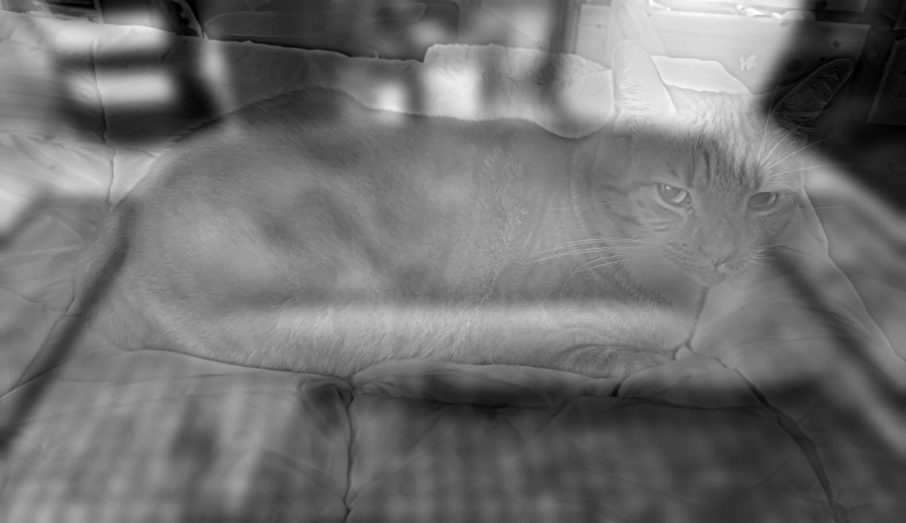
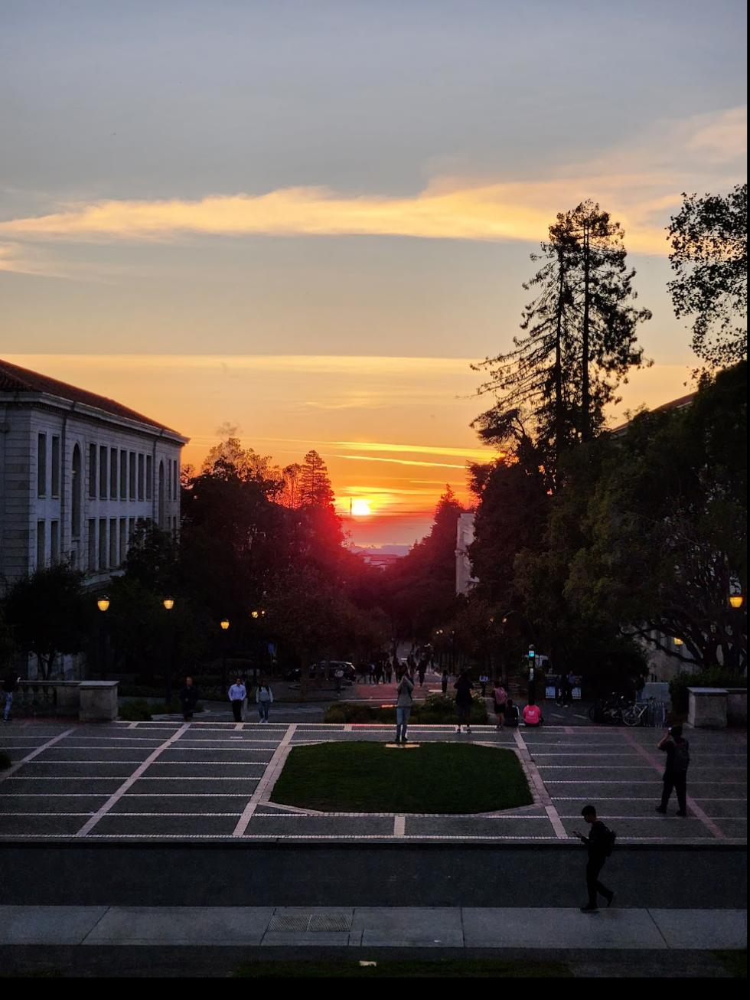
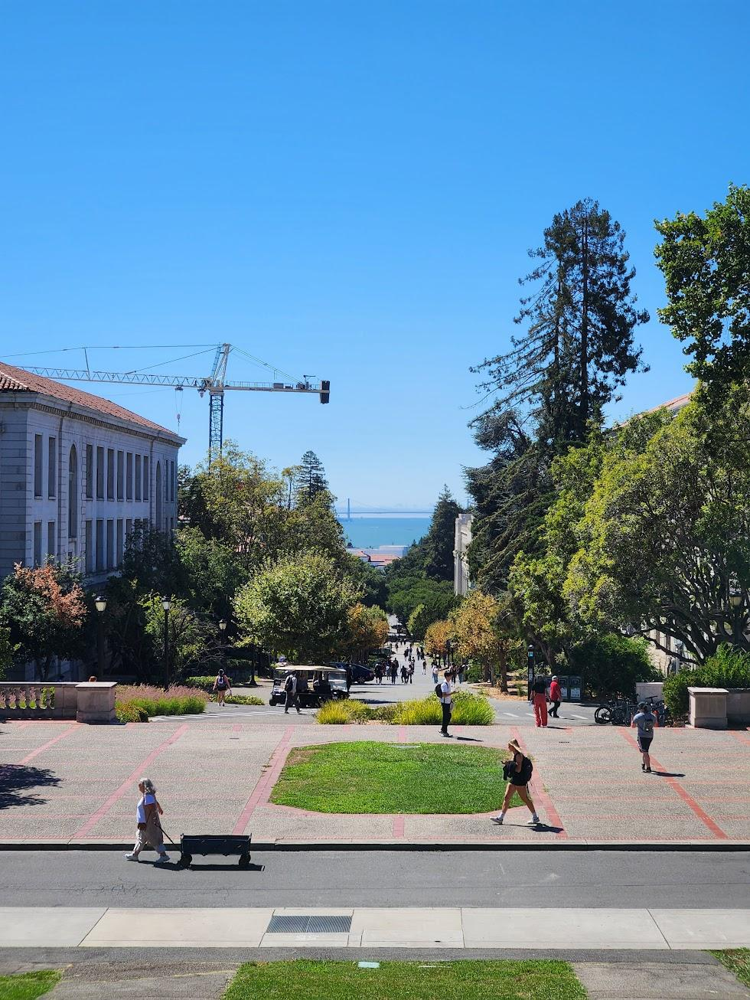

Using the simple finite difference operator, we can extract partial derivatives in x and y from an image, calculate gradient magnitude, and make a basic edge detection algorithm.
The filters used for dX and dY are D_x = [[1, -1], [0, 0]] and D_y = [[1, 0], [-1, 0]]. The D_x filter finds differences between horizontally adjacent pixels, and the D_y filter finds differences between vertically adjacent ones.
Above: dX, dY, gradient magnitude, and binarized magnitude (cutoff 0.1)
1.2: Derivative of Gaussian (DoG) Filter
The previous approach ends up producing noisy results. Thankfully, we can reduce noise by convolving the image with the Gaussian filter, seen here with size 15 and standard deviation 1.5.
Above: dX, dY, gradient magnitude, and binarized magnitude (cutoff 0.15)
Alternatively, instead of convolving the image with the Gaussian filter G, we can convolve G with the Dx and Dy filters. The filters look funny, but the results are the exact same.
Above: dX, dY, gradient magnitude, and binarized magnitude (cutoff 0.15)
Section 2: Fun with Frequencies!
2.1: Image Sharpening
By amplifying the high frequencies of an image, we can create an "unsharp filter", which makes images appear sharper. Results shown use alpha = 0, 1, 2, and 5.
Taj Mahal
Li Ka Shing
Midday (Blurred and Resharpened)
For this picture, I first applied a Gaussian blur before resharpening it with the unsharp filter. While some of the original detail was still lost, the resharpening did manage to recover much of the sharp features of the original image.
2.2: Hybrid Images
Hybrid images are static images that change in interpretation based on viewing distance. By overlaying the high-frequency elements of one image on top of the low-frequency elements of another, we can create a hybrid image.
Derek + Nutmeg
Tiger + Bread

loaf
Alexei Efros + Boris Yeltsin (Failure Case, kinda)
This one was alright, but not as good as my other attempts due to noticeably mismatching head shapes and orientation. Still not too bad though.
2.3: Gaussian and Laplacian Stacks
The first step in combining the apple and orange is to create Gaussian and Laplacian stacks for them. Here, our Gaussian filter has size 25 and standard deviation 4.
Apple
Orange
2.4: Multiresolution Blending
Collapsing the stacks gives us awesome blended images!
Apple + Orange
Tiger + Bread
loaf
Orange + Pink
Henge + Clear

Teletubbies + Baby
We can use a circular mask to insert one image into another.
Acknowledgements
This project is a course project for CS 180. A small portion of the code was provided by course staff. Website template is used with permission from Bill Zheng in the Fall 2023 iteration of the class.